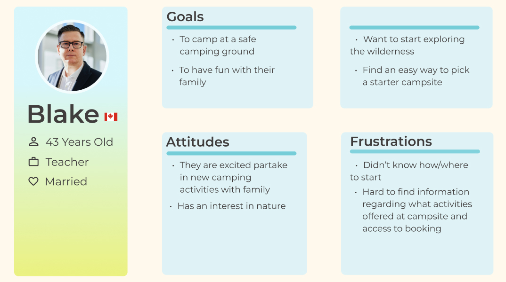
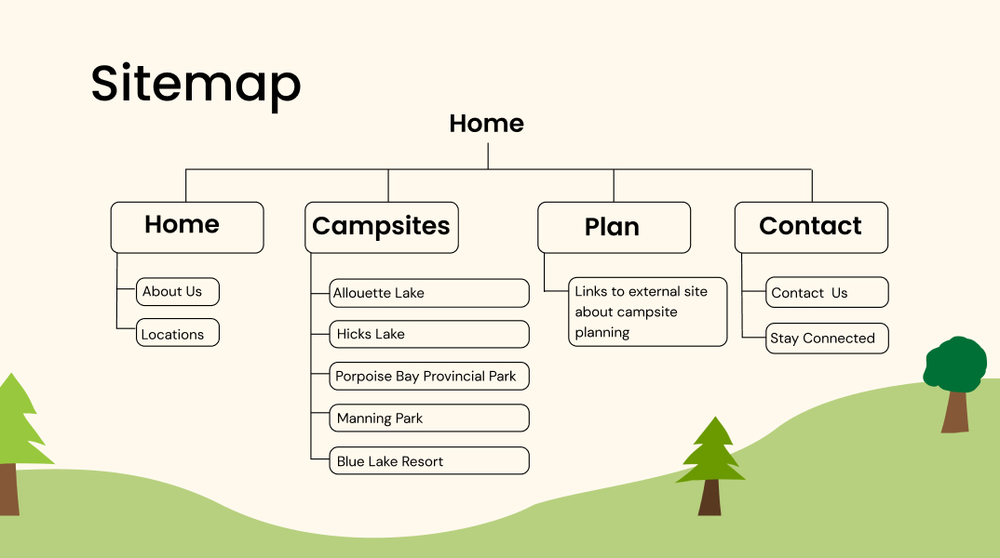
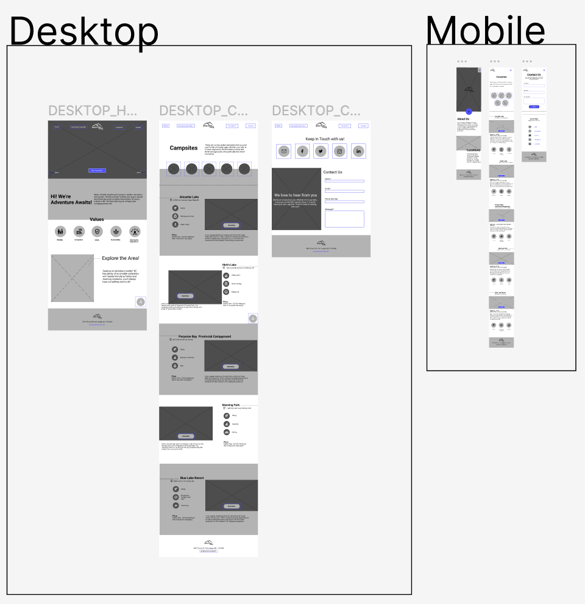

Team
Calvin Alexan, Leanne Ngong, Jaival Shah & Michelle Wang
Tools
Figma, Webflow, HTML, Javascript, CSS
Role
Prototyper, Designer/ Developer
Category
UI, UX
Context
9 weeks, Summer 2022, Academic Project
Overview
Adventure Awaits is a blog dedicated to family travel, particularly outdoor education and tourism. The goal is to construct a standalone website catering to a specific target audience.
Process
Initially, I engaged in a brainstorming session to identify potential clients, user groups, and content that could be matched together. Eventually, Adventure Awaits was chosen as the client and beginner family campers in BC as the target user group. My team and I created a user persona to help us understand the user group's needs, goals, and pain points.
User Persona
We collaborated in Figma to create two mood boards that visualized the desired art direction for the microsite. We developed two examples, choosing the fun and bright mood board that suited our user group.
Naturistic, decluttered and comforting moodboard
Fun, friendly and bright moodboard
We then created a site map to organize and lay out the microsite's content structure.
Site map
Next I created various versions of what each page may look like.
I helped produce medium-fidelity wireframes for both the mobile and desktop versions of the site to create a general layout. Finally, we used Webflow to build the microsite and create the end product.
Wireframes
Challenges
Issues
When working on the project, I faced a significant challenge of ensuring that our layouts and imagery were consistent with our chosen design direction.
Resolution
To tackle this issue, I created multiple variations of wireframes. This allowed us to experiment with different combinations of design elements and see what worked best in terms of our design direction.
Reflection
What I've Learned
Through my involvement in this project, I gained valuable knowledge in wireframing, research techniques, HTML and CSS. I also learned how to adjust the layout structure to adapt to both desktop and mobile screens.
Areas of Improvement
Looking back on the project, one area I would like to improve upon is responsiveness, as I did not have a strong understanding of this concept during the project.